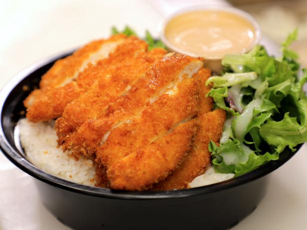

Chicken Katsu

Description
Yummy Japanese breaded chicken. Goes along great with rice!
Ingredients
- 4 skinless, boneless chicken breast halves - pounded to 1/2 inch thickness
- salt and pepper to taste
- 2 tablespoon all-purpose flour
- 1 egg, beaten
- 1 cup panko bread crumbs
- 1 cup oil for frying, or as needed
Steps
- Season the chicken breasts on both sides with salt and pepper.
- Place the flour, egg and panko crumbs into separate shallow dishes.
- Coat the chicken breasts in flour, shaking off any excess.
- Dip them into the egg, and then press into the panko crumbs until well coated on both sides.
- Heat 1/4 inch of oil in a large skillet over medium-high heat.
- Place chicken in the hot oil, and cook 3 or 4 minutes per side, or until golden brown.